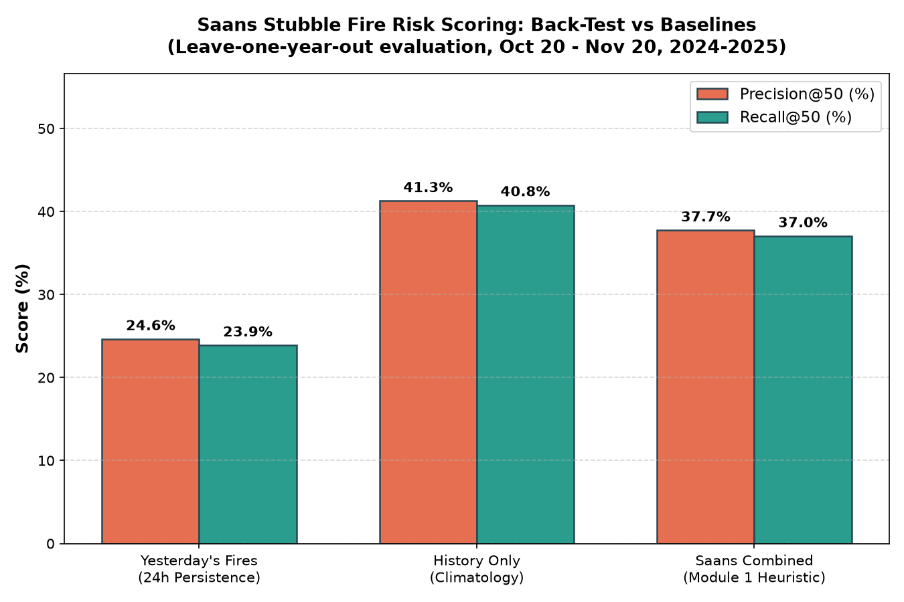

Delhi Smoke Arrival Forecasts & Monitoring Sectors
Click any Delhi sector to visualize upwind smoke plume trajectories from Punjab & HaryanaDelhi & NCR Smoke Influx & Threat Profile
Live comparison across Delhi monitoring sectorsLeave-One-Year-Out Back-Test
To prevent overfitting and prove credibility, Saans was rigorously back-tested across 22 test days spanning peak burning seasons (Oct 20 – Nov 20) in 2024 and 2025. For each test day, the target test year was completely excluded from the climatology index.
| Method | Precision@50 | Recall@50 | Mechanism |
|---|---|---|---|
| Saans Combined (Ours) | 37.7% | 37.0% | History prior + 48h spatial diffusion |
| Yesterday's Fires (Persistence) | 24.6% | 23.9% | 24h raw fire persistence |
| History Only (Climatology) | 41.3% | 40.8% | Multi-year ±7d seasonal window |
Method Performance Comparison (@50 cells)
Generated by scripts/backtest.py
Architecture & Methodological Rigor
Transparent formulation with zero black-box obscurity1. NASA FIRMS VIIRS Ingestion
Thermal radiation detections from the SNPP / NOAA-20 VIIRS instruments (375-meter nadir resolution). We ingest nominal and high-confidence detections, capturing coordinates, acquisition timestamp, and Fire Radiative Power (FRP in MW).
2. Spatial Grid Risk Scoring
Punjab and Haryana are partitioned into 0.1° (~10 km) cells. The risk score combines:
• Historical Climatology: Normalized fire density within ±7 days of current season day
across 5 years.
• Neighborhood Diffusion: Fires in the cell + 8 adjacent cells over 48h, weighted by
FRP ($1 + \text{FRP}/50$, capped at 3).
3. Smoke Arrival ETA & Level
Using Open-Meteo 10m wind direction, we identify upwind fire clusters within 600 km. Cluster travel times ($D / V_{\text{wind}}$) are aggregated via an FRP-weighted median to estimate city arrival hours. Threat levels are classified as LOW, MODERATE, HIGH, or STAGNANT.
Explicit Limitations & Non-Claims
- Satellite Pass Frequency: VIIRS passes over northern India roughly twice daily. Fires ignited between overpasses or obscured by thick cloud cover will experience delayed reporting.
- Heuristic Formula: The risk score is an uncalibrated heuristic combining spatial and seasonal priors; it is not a machine-learned atmospheric dispersion model (like HYSPLIT).
- First-Order Wind Transport: Arrival ETA assumes uniform straight-line travel using city surface winds. Real smoke transport is governed by planetary boundary layer heights and multi-level wind shear.
- Threshold Calibration: Threat level cutoff values (50 and 200) are empirically chosen for operational triage and remain open to calibration against ground PM2.5 sensors.